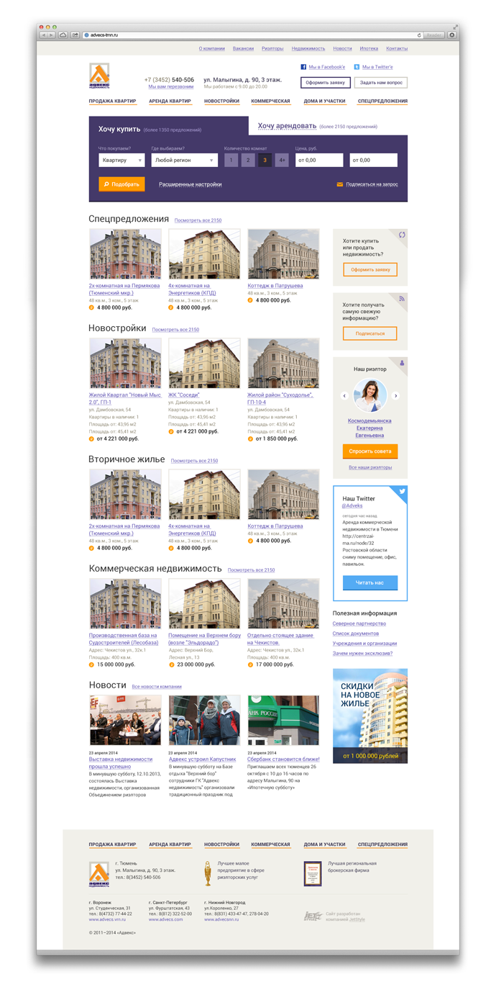
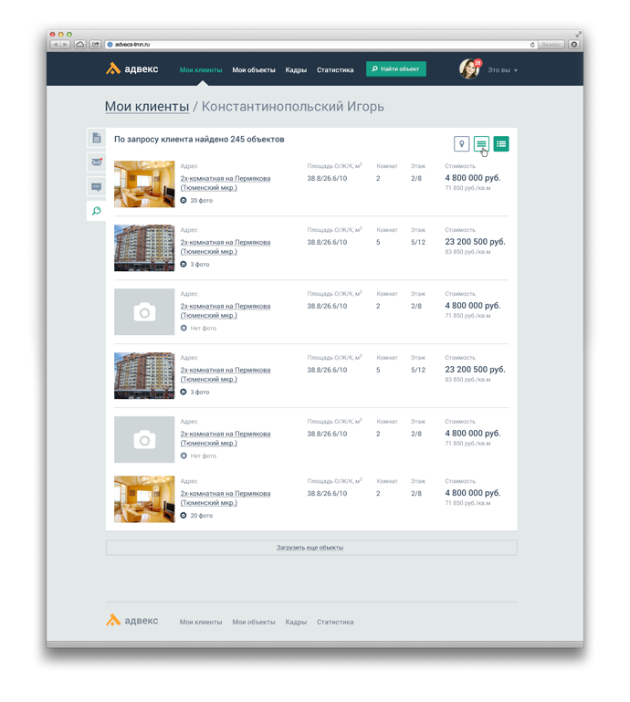
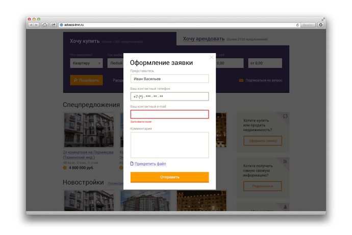
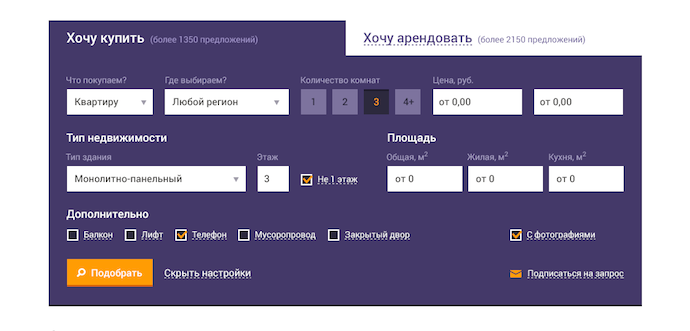
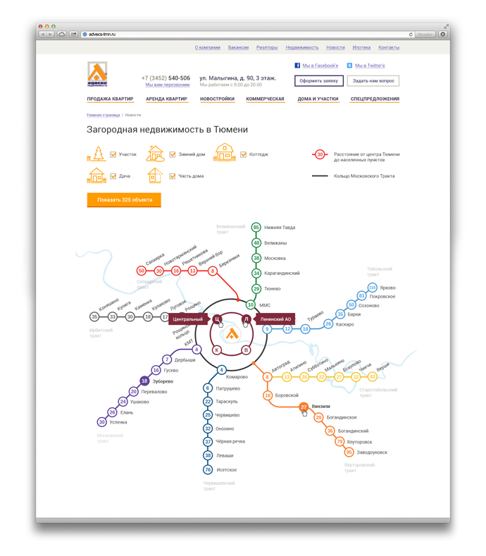
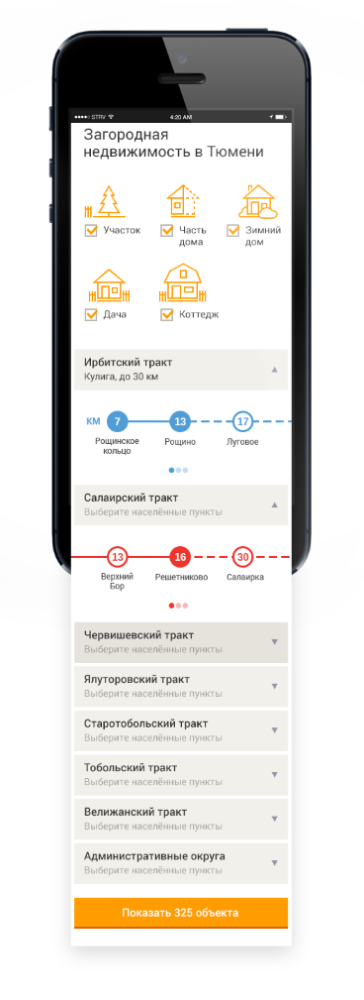

		<div class="page portfoliomodal7" id="portfoliomodal7" tabindex="-1" role="dialog" aria-hidden="true">
			<div class="1modal-content">
				<div class="close-modal" data-dismiss="modal">
					<div class="lr">
						<div class="rl">
						</div>
					</div>
				</div>
				<div class="container">

					<h4>Адвекс недвижимость</h4>
					<!--<p>Построение коммунизма в отдельно взятом агентстве</p>-->
					<p> </p>

					<p>Тюменское подразделение Advex попросило сделать для них новую систему автоматизации агентства.
						Нужно было сделать систему оборота информации внутри агенства недвижимости,
						мобильное приложение и продающий сайт. И мы смогли это сделать.</p>

					

					<h4> Контроль и совместная работа агентов</h4>
					<p>Мы сделали в базе данных клиентов поиск и сравнение объектов между агентами. Это сокращает время поиска в разы.</p>

					<p>Также, сделали чтобы агенты не жульничали друг с другом, пытаясь перехватить друг у друга клиентов.</p>
					<p>Мы выявили и закрыли все лазейки, например, позволяющие присвоить себе чужой объект.</p>
					

					<p>Сайт конвертирует посетителя в клиента. Для этого на сайте есть форма ввода контактов, которая открывается из 9 ссылок на сайте</p>
					
					
					

					<h4>Мобильное приложение</h4>
					<p>Позволило редактировать базу на местах</p>
					

					<p>Самые частоиспользуемые функции привязаны к карточкам клиентов и объектов</p>

					<h4>Цифры</h4>
					<p><strong style="font-size:200%">3,163</strong> человеко-часов</p>
					<p><strong style="font-size:200%">7</strong> сложных задач решены</p>
					<p> на <strong style="font-size:200%">32%</strong> уменьшился средний срок заключения сделки</p>

					<p style="margin-top:20px;">«Хочется отметить внимательное отношение ко всем пожеланиям при создании новой системы управления базой недвижимости,
						сайта компании и мобильного приложения. Отзывчивость и клиентоориентированность оставили приятное впечатление.»</p>
					<p><strong>Сухарев Артур</strong>, замгендир по развитию агентства Адвекс, Тюмень.</p>

					<a href="http://www.jetstyle.ru/portfolio/webdesign/intranet/complex_rabot_dlya_adveks">Описание кейса на сайте JetStyle</a>
					<br>
					<br><a style="margin-top:20px;" href="http://advecs-tmn.ru/popup/">Сайт компании «Адвекс»</a>

					<ul class="list-inline">
						<li>Дата: Июль 2014</li>
						<li>Клиент: Advex</li>
						<li>Категория: Автоматизация</li>
					</ul>
					<a type="button" class="btn btn-closemodal"><i class="fa fa-times"></i> Закрыть</a>
				</div>
			</div>
		</div>
